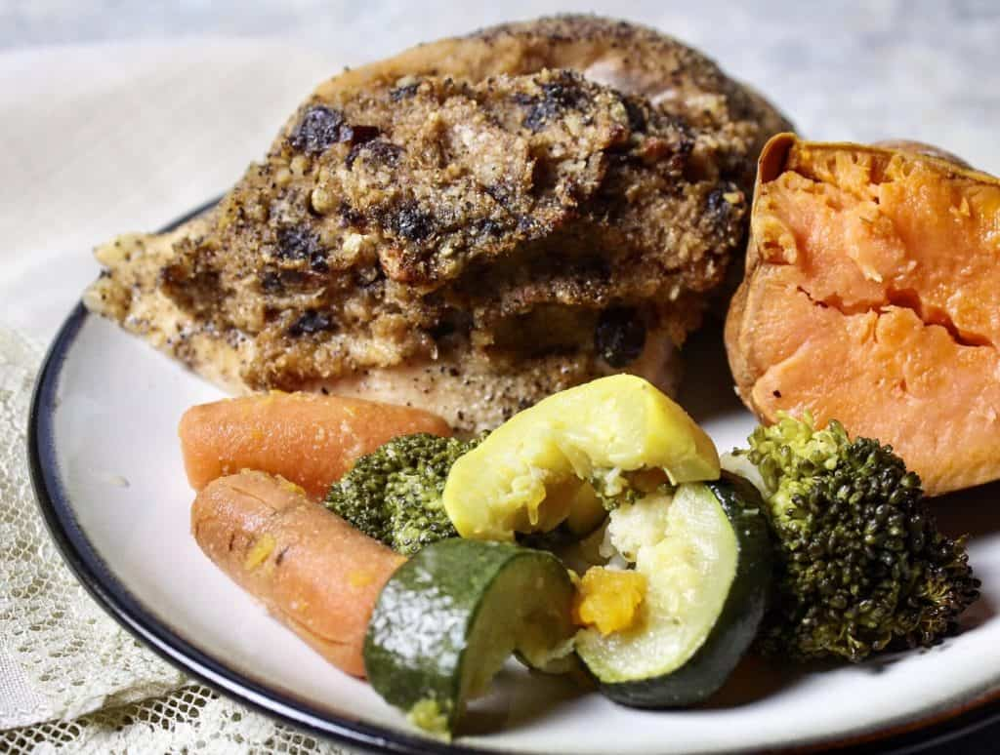

Lavangi

Lavangi is a stuffed chicken breast recipe from Azerbaijan. The filling is
made with onions, walnuts, prunes, and raisins, and the chicken breast is
rubbed with plum preserves. A little sweet, a little salty, and a whole
lotta delicious!
Ingridents
- 3 tbsp rasisins
- 2 medium onions, cut into eighths
- 1 cup walnuts
- ⅓ cup dried prunes, choppped
- 2 tbsp ghee
- ¼ tsp salt
- ½ tsp pepper
- 1 tsp garlic powder
- ⅔ cup plum preserves or plum jam
- 3 large chicken breasts
Instructions
Preparation
-
Soak the raisins in room temperature water for 30 minutes. In a separate
bowl, also soak the prunes for 30 minutes in room temperature water.
- Preheat oven to 350 degrees.
-
Clean the chicken breasts. Using a knife, cut a slit horizontally down
the fatter side edge of the chicken breast. Make sure to not cut the
slit so deep that the knife comes out of the other side of the chicken.
You are making a pocket to store the filling inside.
-
Once the slits are cut in the chicken, use your hands to massage the
plum preserves into the raw chicken. Season chicken on both sides using
pepper, garlic powder, and light salt.
Makign the filling
- Blend the onion quarters in a blender until a liquid forms.
-
Line a medium mixing bowl with a dish towel and pour the blended onion
into the dish towel. Wrap the dish towel up, and squeeze out all of the
excess water from the blended onion. Dispose of the liquid. The
remaining onion should stick together like dry sand when squeezed in
your palm. Set aside.
- Blend the walnuts in the blender. Set aside.
-
Strain the water from the prunes and put the hydrated prunes in the
blender. Blend and set aside.
-
Using a wooden spoon, combine the blended onions, walnuts, and prunes in
a mixing bowl. Drain the raisins and mix into the filling. Season with
salt, pepper, and garlic powder. Melt the ghee and pour into the mixture
as well. Mix to combine. The filling should be wet but not runny.
Assembly and Cooking
-
Fill each chicken breast with the filling. Lay the chicken breasts on an
aluminum-lined cookie sheet and place in the oven.
-
Roast for about 45 minutes or until a meat thermometer reads the
internal temperature as 165 degrees. Enjoy!
Back to the main page